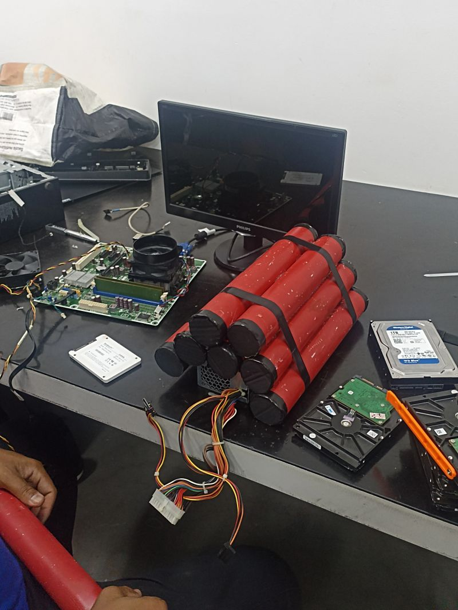
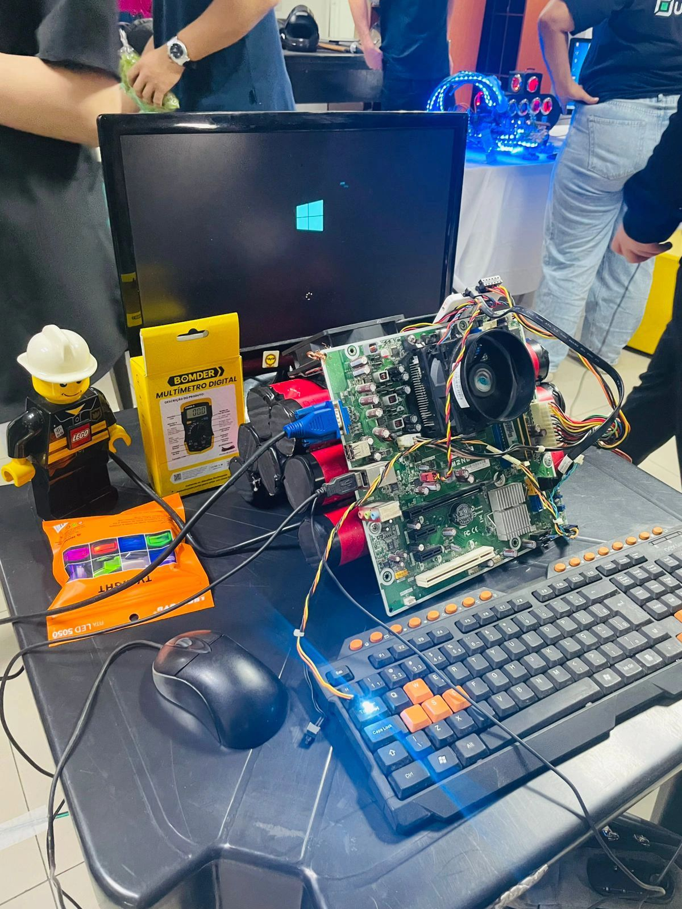
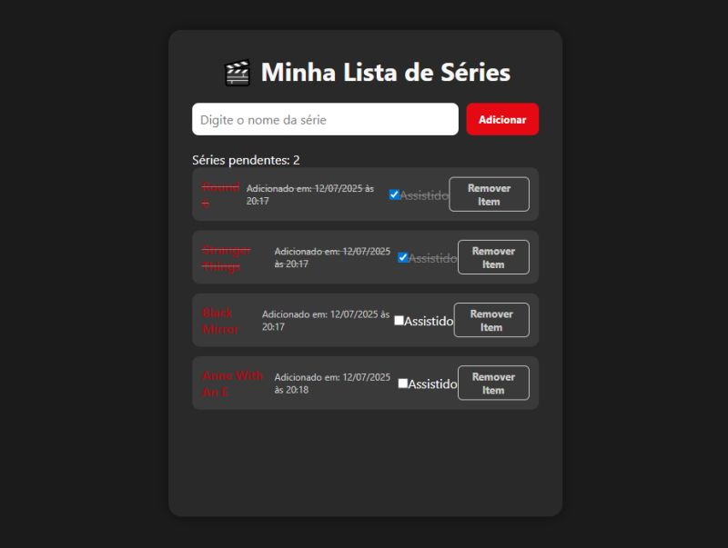
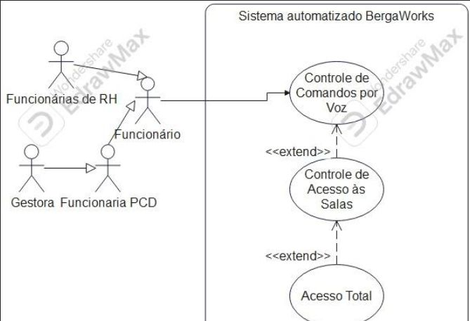
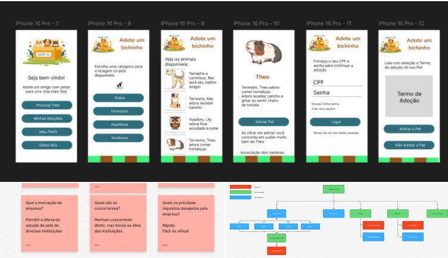

Meu Portfólio
💣Case Mode - UniFECAF💥
Montagem de um computador em grupo com tema de bomba, usando peças reais fora de um gabinete convencional.
🔗Ver projeto


🎬Lista de Séries - Com JavaScript🎬
Aplicação simples para adicionar séries, marcar como assistidas, remover e ver quantas ainda faltam. Criado com HTML, CSS e JavaScript.
🔗Ver projeto 🔗Ver repositório no GitHub

🧠Diagrama de Classes - Análise de Sistemas🧩
Trabalho da faculdade criando um diagrama de classes baseado em um sistema com IA, seguindo boas práticas de Análise de Sistemas.
🔗Ver projeto

🎨Design Digital e Prototipagem de Interfaces📱
Projeto acadêmico de prototipagem no Figma, criando uma interface funcional com foco em navegação intuitiva e boa experiência do usuário.
🔗Ver projeto
